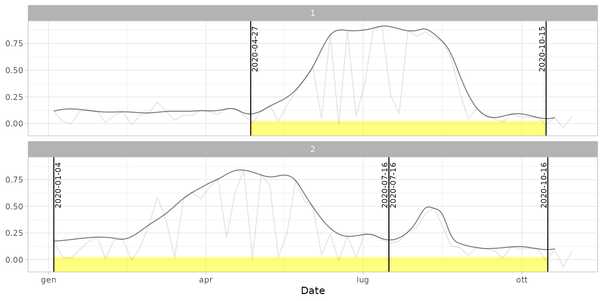

Cut Sentinel-2 time series into separate cycles, detecting dates of cuts and peaks.
cut_cycles( ts, n_cycles = Inf, min_win = 60, min_peakvalue = 0.1, max_dropvalue = 0.6, max_groundvalue = 0.2, ground_buffer = 10, value_type = "relative", min_relh = 0.15, relevance = 0, newyearday = "01-01", weight_metric = "integral" )
Arguments
| ts | Time series in |
|---|---|
| n_cycles | (optional) Maximum number of cycles to be detected in one year
(default: Inf, meaning that all the identified cycles are kept).
A cycle overlapping the new year's day (argument |
| min_win | (optional) Minimum time window between two consecutive maxima / minima to consider a separate cycle. |
| min_peakvalue | (optional) Minimum value to consider a cycle peak. |
| max_dropvalue | (optional) Maximum value to consider a cycle drop (breakpoint). |
| max_groundvalue | (optional) Maximum value to identify a ground plain (window without cycles). |
| ground_buffer | (optional) n. of days of beginning / ending of grounds to be included in previous / next seasons. |
| value_type | (optional) Character: if |
| min_relh | (optional) Numeric: minimum relative difference between the maximum and each of the two minima to consider a separate cycle. Default is 0.15. |
| relevance | (optional) Numeric: threshold used to consider
local minima as relevant, according to Meroni et al. (2021)
(see for reference).
This is an alternative criterion with respect to |
| newyearday | (optional) day to be considered as new year's day, used
to assign cycles to the proper year.
It can be an object of class |
| weight_metric | (optional) Criterion used to assign a weight value
to each seasons (used by subsequent functions:
|
Value
A data table with the following fields:
id: the time series ID (sees2ts);year: the year assigned to each cycle;cycle: the cycle ID (progressive integer within each year);begin: the date of the begin of the cycle;end: the date of the end of the cycle;maxval: the date of the maximum value of the cycle;weight: the value of the metric used for ranking seasons.
Note
The steps used to discriminate seasons are partially based on the method exposed in Meroni et al. (2021) (doi: 10.1016/j.rse.2020.112232 ). The methodology will be documented in future.
Author
Luigi Ranghetti, PhD (2021) luigi@ranghetti.info
Examples
# Load input data data("ts_filled") # Cut seasons with standard parameters dt_cycles <- cut_cycles(ts_filled) dt_cycles#> id year cycle begin end maxval weight #> 1: 1 2020 1 2020-04-27 2020-10-15 2020-07-13 88.71541 #> 2: 2 2020 1 2020-01-04 2020-07-16 2020-04-21 92.78070 #> 3: 2 2020 2 2020-07-16 2020-10-16 2020-08-08 13.91427# Plot the TS highlighting the extracted cycles plot(ts_filled, pheno = dt_cycles, plot_dates = TRUE)# Cut cycles considering separate cycles only if the maximum NDVI is > 0.7 dt_cycles_2 <- cut_cycles( ts_filled, min_win = 120, # exclude cycles shorter than 4 months min_peakvalue = 0.7, # exclude cycles with NDVI of peak < 0.7 value_type = "absolute", # 0.7 is the absolute NDVI value, not relative newyearday = "10-01" # consider a year from 1st October to 30th September ) plot(ts_filled, pheno = dt_cycles_2)